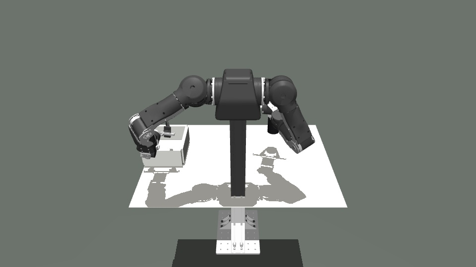

本轮采用快速工程验收。ACT 只作辅助观察，平台的基本检查与原生物理抓瓶单独判断。

执行器驱动与原生接触；无焊接、瞬移或物理参数改动。
| 检查 | 结果 | 说明 |
|---|---|---|
| 原生 TAMP 抓瓶 | 通过 | 右手抓起并持稳，最大穿透约 0.414 mm |
| 真机指令回放 | 部分完成 | 536 步 / 19.487 s；关节 RMSE 约 0.004–0.018 rad，瓶子碰落后判失败 |
| 真机 ACT 权重 | 未通过 | 原始范围在 128 步拒绝夹爪越界；两组范围与初态对照各运行 900 步，均未抓起瓶子 |
当前结果支持继续做抓瓶技能和 harness 开发。相机与真实控制、接触参数仍需独立验证，尚未证明仿真训练可直接迁移真机。TAMP 抓瓶使用仿真几何，不能替代视觉策略的验证。
后台增加了逐步反馈和汇总文件，主页面没有增加文字或面板；没有在公司电脑写入文件或操作真机。